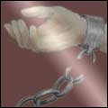
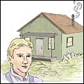

43 items in 23 author sections:
Alden, Isabella M. |
 |
January 31, 2004 | |
| Tip Lewis and His Lamp | Isabella M. Alden, 1867 | Story | |
His hand began to tremble. What was the matter with that example? Oh, what was the matter? The remainder was too large; no—it was too small; no—it was—he didn't know what! Everybody was watching him; he heard a boy laugh softly. | ||
Berry, Robert L. |
 |
February 15, 2003 | |
| Adventures in the Land of Canaan | Robert L. Berry, 1924 | Sanctification | |
"All things" means all things. The Christian who gives up all is certain of God's continual care and protection. He cannot expect to escape trouble or trial or temptation; but he is kept in these things.... They may be hurt... but they will sail on in peace in God. | ||
 |
May 31, 2004 | |
| Around Old Bethany | Robert L. Berry, 1925 | Story | |
It was... an unwise thing to say at that particular time. Robert Davis was young, and full of zeal. Most probably he should not have uttered those words. Peter Newby was powerfully affected. He felt as if his character had been scandalized before the whole crowd. | ||
Byers, Andrew L. |
 |
August 27, 2004 | |
| Birth of a Reformation | Andrew L. Byers, 1921 | Biography | |
My mother had been reading The Trumpet and had formed the opinion of Brother Warner that he was a great and wonderful man. So when she met him she exclaimed, "And is this Brother Warner!" His reply was, "Yes, and he is the least man you ever saw." | ||
Byers, Jacob W. |
 |
January 18, 2003 | |
| Bible Humility | Jacob W. Byers | Humility | |
Let us remember that this Bible humility cannot be made by human effort. It is divine, and furnished us as freely as salvation.... let us be sure first that we have a clean heart; then put on the true Bible humility, which can only be found under the mighty hand of God. | ||
 |
July 11, 2004 | |
| Parent and Child | Jacob W. Byers | Responsibility | |
Dear parents, we hold the highest and most God-honored position in this world, and to a large extent hold in our hands the destiny of our own children.... Oh, that God may waken us to our important duties and opportunities!... We must grasp them now. | ||
 |
December 1, 2004 | |
| Sanctification | Jacob W. Byers, 1902 | Sanctification | |
Jesus requires the undivided heart and every affection. You cannot refuse him. He has done too much for you. He suffered without the gate that He might sanctify you with His own blood. He gave Himself... and now how can you withhold anything from Him? | ||
Byrum, Enoch E. |
 |
November 22, 2004 | |
| Riches of Grace | Enoch E. Byrum, 1918 | Story | |
My heart cries out, "What a mighty God! What a great and loving Father!" Counting my blessings, I find they so far outnumber my trials that it brings me real courage to press on, knowing that, as I do, grace will be given me to meet whatever may yet lie in my pathway. | ||
Byrum, Isabel C. |
|  | May 25, 2004 | |
| How John Became a Man | Isabel C. Byrum, 1909 | Biography | |
He had not meant to be wicked, but he suddenly realized that his life had been wasted; and he concluded that he was not ready to meet Christ. But John believed that Christ would come to the earth, and he felt that he would give anything to be ready to meet Him. | ||
 |
November 18, 2004 | |
| The Pilot’s Voice | Isabel C. Byrum, 1916 | Story | |
As a captain, realizing that the rudder of his vessel is broken, looks out upon the distant horizon and sees the storm approaching, so Byron looked into the faces of those before him in this terrific storm of life. | ||
 |
March 15, 2003 | |
| The Poorhouse Waif | Isabel C. Byrum, 1919 | Biography | |
He knew only that he existed, and that from day to day there were many things happening about him... a great many of which were distasteful to him. But all that took place he quietly endured, thinking that it was the best that there was in life for him. | ||
Feuvre, Amy Le |
 |
March 1, 2006 | |
| “Probable Sons” | Amy Le Feuvre, 1896 | Story | |
"Uncle Edward... will you ask God to make Tommy come back home? His mother does want him so badly." "I will leave you to do that," was the curt reply. "Well, if you don't want to pray for Tommy, pray for God's probable sons, won't you? | ||
Hale, Mabel |
March 6, 2004 | ||
| Beautiful Girlhood | Mabel Hale, 1922 | Guidance | |
Girlhood is the opening flower of womanhood. It has charms all its own. The wonderful change from the child to the woman, the marvelous blossoming of young, healthy girlhood, will ever be God's great miracle in life's garden. Like a half-open rose is girlhood. | ||
|  | October 23, 2004 | |
| Hero of Hill House | Mabel Hale, 1922 | Story | |
Austin's brow clouded as he heard Doyle's wish.... It did not seem fair, after the sacrifice he had made all these years... that the boy should care more for his father and this unknown mother than he did for his home and the one who had made it possible. | ||
Jarvis, Lottie L. |
 |
November 19, 2002 | |
| A True Story in Allegory | Lottie L. Jarvis | Compromise | |
Many times had the Apostasy family tried to destroy that most annoying trumpet, but... they had never been able to do aught but, for a season, to in some way deceive the trumpeters, for a short time, into the idea that it was no longer necessary. | ||
Lecomte, Eva |
January 5, 2004 | ||
| Paula the Waldensian | Eva Lecomte, 1940 | Story | |
My father looked at her searchingly, with that new tenderness which I had seen frequently lately.... "I believe," said Rosa, "that she'd be happy to give us her last piece of bread if there was occasion for it." "Yes, and her life also, if that was necessary." | ||
Lukesh, Charles |
 |
March 30, 2004 | |
| Only a Servant | Charles Lukesh | Story | |
The sick landlady praised the servant, "He takes care of me like a son, and he is a wise man. He persuaded my husband to let him put up a stove in the kitchen.... Others barely do what they are told to; this one does the needed things without being told." | ||
Miles, A. Marie |
 |
April 13, 2004 | |
| The Key to Peace | A. Marie Miles, 1978 | Bible/Word | |
We need to search the Scriptures to find out how to live pleasing to the Lord in this world. We can't do this within ourselves. God had a plan for us by sending Jesus Christ to die on the cross for our salvation, so through Christ we can live right. | ||
Morrison, John A. |
 |
May 21, 2004 | |
| The Deacon of Dobbinsville | John A. Morrison, 1920 | Story | |
As he lay thus... he was startled by the sight of a man's shadow on the side of the tent. He lay still and listened. Soon he heard low muttering voices a few rods from his tent. Still he listened. They drew nearer and nearer. Finally the mutterings became whisperings. | ||
Naylor, Charles W. |
 |
June 28, 2004 | |
| The Redemption of Howard Gray | Charles W. Naylor, 1925 | Story | |
"Your feelings sometimes depend upon something else to which you have given little attention. Did you ever read in the Bible... 'The just shall stand by their feelings?'... No, you never read anything like that. The Bible says, 'The just shall live by faith.' " | ||
Orr, Charles E. |
March 10, 2005 | ||
| A Neighborhood Awakening | Charles E. Orr | Bible/Word | |
Mr. Works—I am satisfied to go on in my way. Mr. Truman—I could have taken my way long ago, but I want to find the Bible way. Mr. Wright—Jesus says, "I am the way." Taking Christ is the only way to heaven. | ||
March 15, 2004 | ||
| A Religious Controversy | Charles E. Orr | Truth | |
Mr. W.—If his Bible says we can live in this world without sin, it's not like mine. Mrs. W.—I'll get your Bible and let you read.... Turn and read Acts 4:12. Mr. W.—Is Acts in the Old Testament or the New? | ||
 |
June 6, 2004 | |
| Christian Conduct | Charles E. Orr, 1903 | Truth | |
Christianity brings a heaven to the home as well as in the public life. Christianity is Christ in the heart, and where Christ is, there is heaven; consequently a Christian has a heaven within him, and he has this heaven at home as well as abroad. Praise God! | ||
 |
November 6, 2004 | |
| Food for Lambs | Charles E. Orr, 1904 | Guidance | |
Jesus, the true shepherd, came seeking for you, and now that you have given yourself to His loving care, always confide in Him and yield to His guidance. Ever keep your hand in His and follow where He leads, and your life will be full of joy. | ||
 |
January 17, 2004 | |
| Helps to Holy Living | Charles E. Orr | Holiness | |
Who among us has an eye to see all that belongs to the Christian life? Are there not yet some glorious things lying out beyond the boundary of our vision? Oh, for the open eye to see the wondrous things God has prepared for them that love Him! | ||
 |
February 1, 2005 | |
| How to Live a Holy Life | Charles E. Orr | Holiness | |
The soul intertwined with the meek and lowly life of Jesus will form a character of deep piety and sincere godliness. The daily life should be intertwined with the life of Jesus. Let there be no reaching out for anything outside of Him. | ||
 |
November 9, 2002 | |
| Odors from Golden Vials | Charles E. Orr, 1912 | Prayer | |
Those who have been praying for years and have the closest intimacy with God have a desire to know still more about prayer. How little we yet know of God! It is true that He has taught us many glorious things of Himself... but there is much more to learn. | ||
 |
February 15, 2005 | |
| The Hidden Life | Charles E. Orr | Experience | |
A walk with God is a satisfactory walk. He who walks with God is delighted all the way.... In God's ways there are no disappointments. When our wills are submitted to Him and we humbly and submissively walk where He leads us, we meet with no disappointments. | ||
 |
April 19, 2003 | |
| The Instruction of Youth in the Christian Life | Charles E. Orr | Guidance | |
Years ago men rushed, at the risk of their lives, to the gold fields.... We should lay hold upon all instruction that leads to the knowledge of God with that hunger of soul, with that eagerness... that men lay hold upon that which leads them to the possession of gold. | ||
July 5, 2003 | ||
| The More Abundant Life | Charles E. Orr | Experience | |
The abiding soul is a praying soul. In all abiding in Jesus there is a constant action of the soul, and this action is prayer.... The soul that prays, really prays, abides in a state of quietness, reposes on the bosom of God, and knows no fear, save the fear of God. | ||
Perryman, F. J. |
 |
November 16, 2002 | |
| How to Resist the Devil | F. J. Perryman | Warfare | |
God can do no more than He has done. At the cross He judged the devil and overthrew him and his hosts.... Not only are we saved from sin on account of that death, but we are also saved from Satan. | ||
Roy, Kristina |
|
March 30, 2004 | |
| Only a Servant | Kristina Roy | Story | |
The sick landlady praised the servant, "He takes care of me like a son, and he is a wise man. He persuaded my husband to let him put up a stove in the kitchen.... Others barely do what they are told to; this one does the needed things without being told." | ||
Shaw, Solomon B. |
 |
June 22, 2003 | |
| Touching Incidents: Children’s Edition | Solomon B. Shaw, 1895 | Prayer | |
" 'All things, whatsoever ye shall ask in prayer, believing, ye shall receive.' " She looked up at the pastor earnestly, and inquired: "Is that so? Does God say that?" ... She immediately began praying: "Lord, send my father here; Lord, send my father to the chapel." | ||
Smith, Hannah W. |
 |
January 1, 2006 | |
| The Christian’s Secret of a Happy Life | Hannah W. Smith, 1875 | Sanctification | |
Today it is your happy privilege to prove, as never before, your loyal confidence in the Lord by starting out with Him on a life and walk of faith, lived moment by moment in absolute and childlike trust in Him. | ||
Strong, W. M. |
January 5, 2004 | ||
| Paula the Waldensian | W. M. Strong, 1940 | Story | |
My father looked at her searchingly, with that new tenderness which I had seen frequently lately.... "I believe," said Rosa, "that she'd be happy to give us her last piece of bread if there was occasion for it." "Yes, and her life also, if that was necessary." | ||
Various |
December 28, 2002 | ||
| Songs and Stories: Book 1 | Various, 2002 | Story | |
"Oh, Mother!... I never thought of that. Do kneel down with me, and ask God to forgive me, and help me to forgive Jack." So they prayed a long time; and when, at last, they rose from their knees, Willy looked as if he were at peace with all the world. | ||
November 27, 2004 | ||
| Songs and Stories: Book 2 | Various, 2004 | Story | |
"Everybody can't be like Christopher Columbus, Mama." "Maybe not, my dear boy, but everyone can imitate Christ. Wicked men... mocked Him, blindfolded Him, and smote Him in the face.... If you will pray to Christ, He will make you a brave, manly Christian." | ||
 |
September 25, 2004 | |
| Stories Worth Rereading | Various, 1913 | Story | |
"Why do you rub at the knives forever?" asked Mary. Mary was the cook. "Because they are in my corner," Georgia said, brightly. " 'You in your small corner,' you know, 'and I in mine.' I will do the best I can; that is all I can do." | ||
Walton, Amy C. |
 |
October 9, 2004 | |
| A Peep Behind the Scenes | Amy C. Walton, 1877 | Story | |
"Rosalie," said her father.... "Come along!" So Rosalie had to leave her poor mother. And instead of singing the soothing words of the hymn, she had to repeat again and again the foolish and senseless words which had fallen to her share in the new play. | ||
 |
October 1, 2004 | |
| Tug of War | Amy C. Walton, 1898 | Decision | |
I saw that they were close upon a terrible place, for mighty cliffs stood above the shore, and they were within a very short distance of a sheer and terrible precipice. "What are you dragging?" I cried to them. And a thousand voices seemed to answer, "A soul! a soul!" | ||
Williams, Effie M. |
 |
April 4, 2004 | |
| A Hive of Busy Bees | Effie M. Williams, 1931 | Story | |
"I have been thinking about another kind of bee," said Grandma. "Do they sting, like the bees in the orchard?" asked Joyce, with a little shiver. "Their stings are much sharper," answered Grandma, "and the pain lasts much longer. There is a hive full of these bees." | ||
 |
December 27, 2003 | |
| Just Mary | Effie M. Williams | Biography | |
When the train pulled out from the station, taking Elsie and little Mary back to their own home, he laid his head on his mother's shoulder and sobbed as only a twelve-year-old boy can sob. Peachy had found a place in his heart which no one else could fill. | ||
 |
August 23, 2003 | |
| The Man of His Counsel | Effie M. Williams | Story | |
At this Alfred grasped Joe's hand and said, "Joe, do not fear for me, for I am as hungry for the things of God as you are, and I shall ever keep my heart open that I may hear the voice of God and be directed by His Spirit." | ||